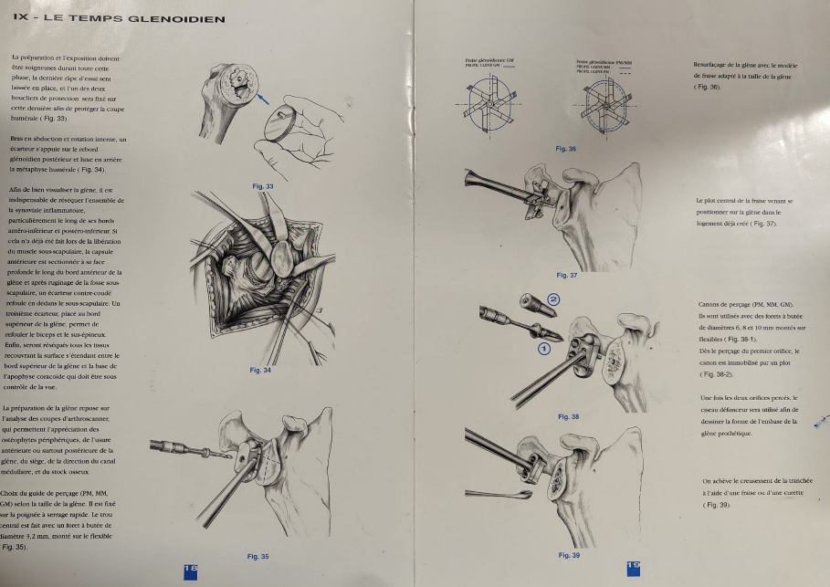
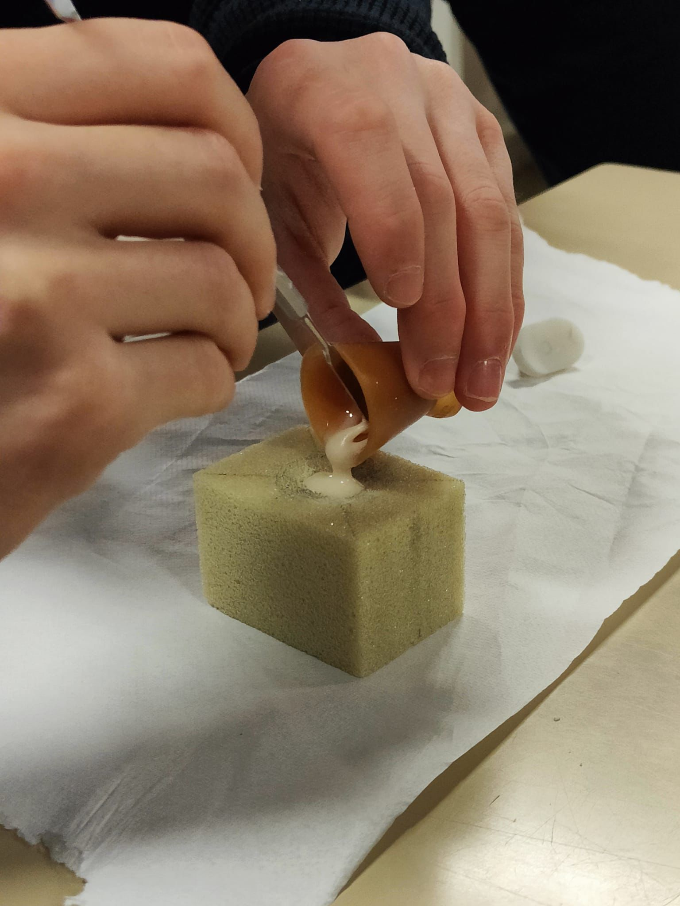
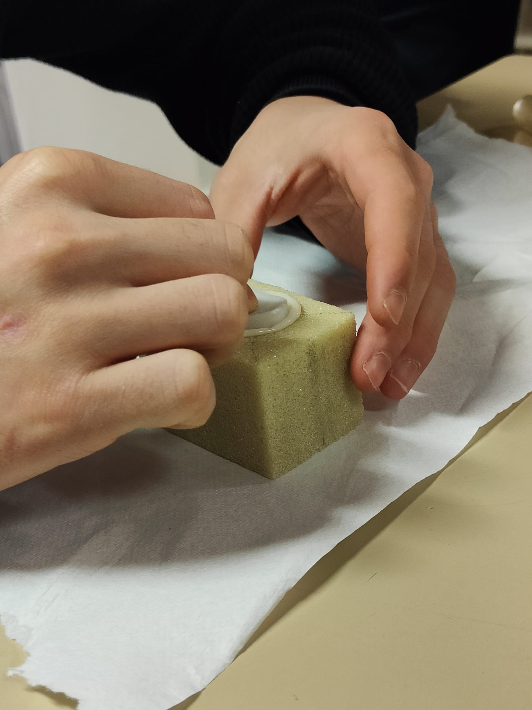
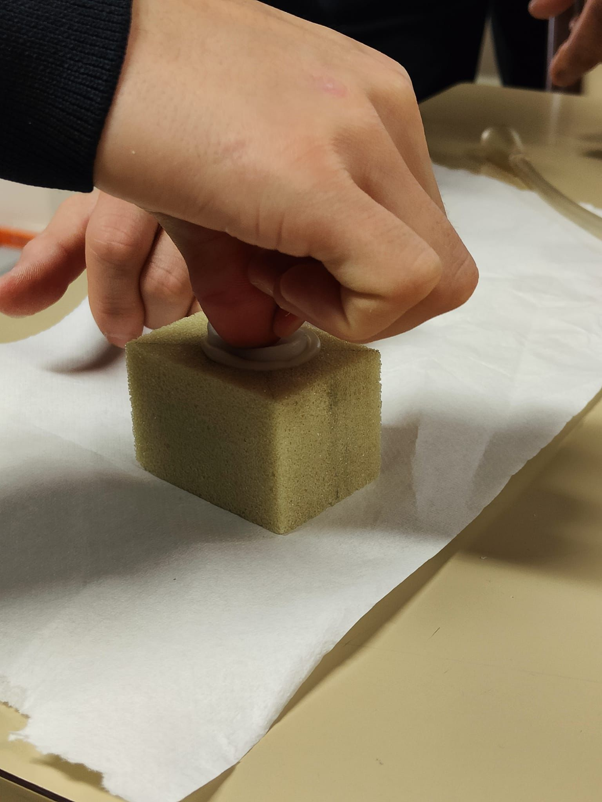
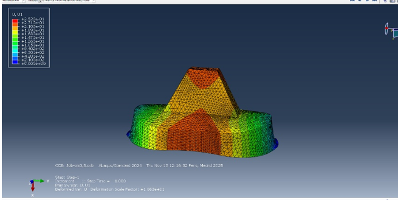

Prosthetic Shoulder Design & Mechanical Testing (REPCE)
Manufacturing of a glenoid implant, mechanical characterization in the laboratory, and correlation with Abaqus Finite Element Analysis (FEA).
1. Manufacturing & Prototyping
The project began with the study of the glenohumeral joint anatomy to define the geometric constraints of the implant. We focused on a keeled glenoid implant design.
I manufactured the prosthesis using a molding process with Zortrax Resin Basic. This photopolymer resin was chosen for its mechanical properties (Young's Modulus ~2.2 GPa). The process involved precise liquid pouring into a silicone mold and curing to ensure geometric accuracy and surface finish.




2. Mechanical Characterization
To validate the mechanical behavior of the implant, we conducted compression tests in the laboratory. The prosthesis was mounted on a foam block simulating the bone support (scapula).
Test Protocol:
• Load: Axial compression up to 150 N.
• Equipment: Hydraulic traction/compression machine with a localized indenter.
• Goal: Measure the vertical displacement (U2) and check for structural stability.
The experimental results showed a displacement of 0.228 mm under a 150 N load, serving as a reference for our numerical model.
Dynamic Testing Visualization
Video recording of the compression test cycle, highlighting the elastic deformation of the keel component under load.
(Mechanical Compression Test)
3. Finite Element Analysis (Abaqus)
I developed a digital twin of the experiment using Abaqus/CAE to correlate simulation with reality. The model used Quadratic Tetrahedral elements (C3D10).
Key Challenges & Solutions:
The main challenge was defining the correct Boundary Conditions. Initial attempts resulted in rigid body motion. The solution involved partitioning the contact surface edges to apply specific constraints mimicking the foam support.
Results: By fine-tuning the Young's Modulus to 2200 MPa, the simulation yielded a displacement of 0.2281 mm, matching the experimental data (0.228 mm) with high precision.
